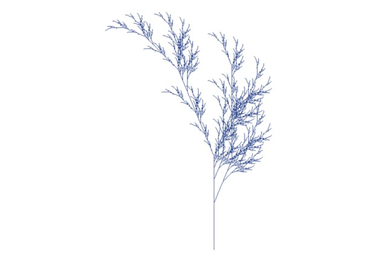
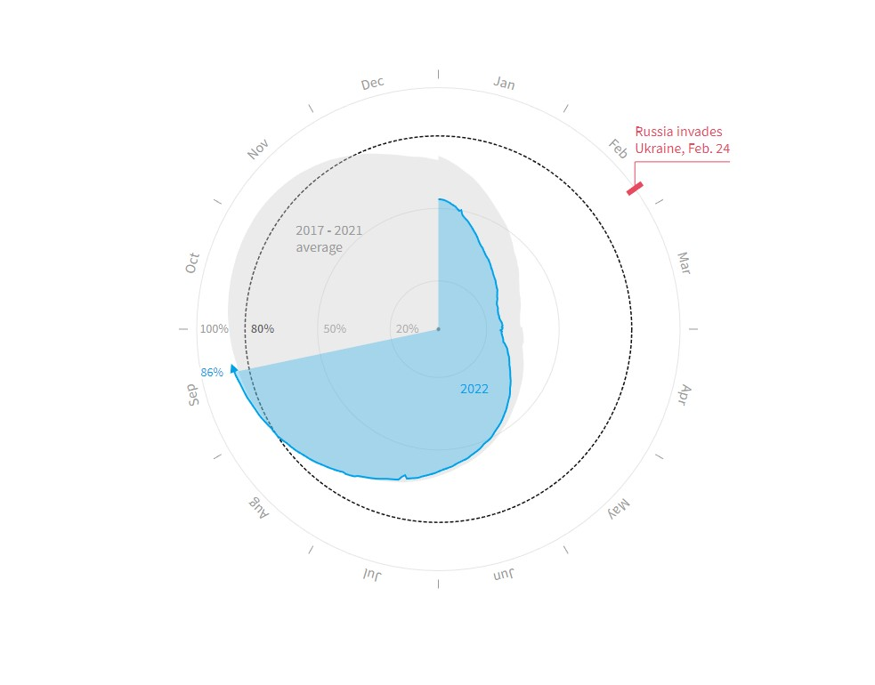

Generative art is art that is created in part or wholly through the use of an autonomous system. Listed below are multiple examples of generative art that I located on the internet utilizing Google search.
The first examples comes from the website https://ayruos.com/generative-art/ and has multiple examples of generative art utilizing straight lines.

Notice that in these examples the artist utilizes only black and white colors with straight lines, yet when looking at the two lower examples the objects appear to be almost three dimensional. From the same website I also pulled examples where the artist used rules to develop markings, these markings could be a language unto itself, but in this case it is nothing more than generative art utilizing rules and parameters to create the objects, they are pasted below.

This next example comes from the website https://www.generativehut.com/post/generative-art-python-tutorial-for-penplotter and was created using Python. Similar to the first example I cited this work appears to be three dimensional. The author/artist of this work shared the code they used in Python to create this work.

My final examples of generative art come from the website https://blog.simondlr.com/posts/new-markets-in-the-arts-generative-art-economies , here the author utilizes color to create their art. The first example is below.

Again this artwork has a three dimensional feel to it, what is interesting is that if you look closely at it you can see that the waves are created using lines. The example below (from the same artist and website) is an example utilizing colors and circles. It makes me think back to the days of looking into a cylindrical tube with colored beads as a child where I would see an array of kaleidoscopes by turning the tube with my hands.

My final example of generative art is a portrait that was created using this methodology. Again it comes from the same website as the two examples above.

- For the Fall R Script I utilized the color of RoyalBlue4. While not a fall color it makes me think of winter, when an ice storm will leave all the plants outside covered in ice. The output of that code is below. There is a certain beauty in nature when plants are covered in ice. The only changes in the code was to replace the brown color with my own. I utilized the R Color Cheat sheet by Melanie Frazier to find the color I desired.

Sometimes I cannot help myself. Since I chose blue for winter I decided to edit the code a little more. The next plot shows what happens to plants when they are unable to hold up from the weight of the ice on them.

The below chart was taken from Rueters (https://graphics.reuters.com/UKRAINE-CRISIS/EUROPE-GAS/zdvxozxzopx/). I find that this graphic is both unique and a bit confusing at the same time. I feel as though they could have used a better graphic to tell the story.

The purpose of the graph is to show EU gas levels and how the EU is trying to stockpile gas to an 80% mark before the start of the winter season. A critical piece of information that I feel is being left out of this graphic is how much is 80% of the storage tanks? What is the total capacity of storage? The graphic makes it difficult to discern what the levels are at prior to 80 due to the nature of the graphic. While I applaud them for trying to show the data in a different manner or perspective, I find it difficult to clearly understand the numbers.